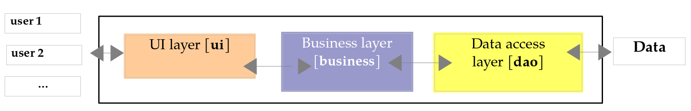

8. Ausführungs-Threads
Dieses Kapitel führt in die gleichzeitige Ausführung mehrerer Codeabschnitte innerhalb eines einzigen Programms ein: Threads (Ausführungs-Threads) und die Werkzeuge zu ihrer Synchronisierung. Im Jahr 2008 besaßen die meisten Rechner nur einen Prozessor, und Parallelität war weitgehend eine vom Betriebssystem aufrechterhaltene Illusion. Heute verfügt selbst der einfachste Laptop über mehrere Kerne: Mehrere Threads laufen tatsächlich gleichzeitig, wodurch die hier behandelten Synchronisierungsprobleme noch häufiger auftreten.
Die Beispiele sind Einzeldatei-Anwendungen ([dotnet run threads-01.cs]) im Ordner [08-threads]. Beachten Sie, dass die impliziten [using]-Direktiven dieser Anwendungen [System.Threading] und [System.Threading.Tasks] umfassen: Die Klassen [Thread], [Lock], [Mutex], [Monitor], [Interlocked], [Task] … können ohne die Direktive [using] verwendet werden.
Ein Wort der Vorsicht vorab: Die Ergebnisse eines Multithreading-Programms variieren von einer Ausführung zur nächsten. Die Reihenfolge, in der den Threads der Prozessor zugeteilt wird, hängt vom Betriebssystem, von der Anzahl der Prozessoren und von der Auslastung des Rechners ab. Die in diesem Kapitel gezeigten Ergebnisse wurden auf einem Linux-Rechner mit zwei Prozessoren erzielt, der mit anderen Programmen geteilt wurde. Wenn Sie die Beispiele ausführen, erhalten Sie ähnliche Ergebnisse, die aber nur selten identisch sein werden.
8.1. Die Klasse Thread
Wenn eine Anwendung gestartet wird, läuft sie in einem Ausführungsstrang, dem sogenannten Thread. Die .NET-Klasse, die einen Thread modelliert, ist die Klasse [System.Threading.Thread]. Ihre wichtigsten Konstruktoren, Eigenschaften und Methoden sind die folgenden:
Member | Aufgabe |
[Thread(ThreadStart start)] | erzeugt einen Thread, der die Methode [start] ausführt. Der Delegat [ThreadStart] verweist auf eine Methode ohne Parameter und ohne Rückgabewert: [void M()] |
[Thread(ParameterizedThreadStart start)] | wie oben, aber mit einer Methode, die einen Parameter vom Typ [object?] hat: [void M(object? obj)] |
[static Thread CurrentThread] | der Thread, der den Code ausführt, der diese Eigenschaft angefordert hat |
[string? Name] | der Name des Threads, nützlich zur Nachverfolgung |
[int ManagedThreadId] | ein eindeutiger numerischer Bezeichner des Threads |
[bool IsBackground] | gibt an, ob der Thread ein Hintergrund-Thread ist (siehe unten) |
[bool IsAlive] | gibt an, ob der Thread gerade läuft |
[void Start()], [void Start(object? obj)] | startet die Ausführung des Threads und übergibt ihm optional Informationen vom Typ [object] |
[void Join()], [bool Join(TimeSpan timeout)] | Der Thread T1, der [T2.Join()], ausführt, wird blockiert, bis der Thread T2 beendet ist. Die zweite Form begrenzt die Wartezeit |
[static void Sleep(int ms)] | Der Thread, der die Methode ausführt, wird für [ms] Millisekunden angehalten. Er gibt die CPU ab, die an einen anderen Thread geht |
Der Kurs von 2008 behandelte auch die Methode [Abort], die einen Thread gewaltsam beendete. Sie existiert praktisch nicht mehr: Seit .NET Core löst sie die Ausnahme [PlatformNotSupportedException] aus. Das abrupte Anhalten eines Threads konnte die Daten, die er gerade bearbeitete, in einem inkonsistenten Zustand hinterlassen. Heute wird ein Thread kooperativ zum Anhalten aufgefordert, und zwar über ein Abbruchtoken ([CancellationToken]) , das der Thread regelmäßig prüft: Das sehen wir im nächsten Kapitel.
Hier ist eine erste Anwendung, die die Existenz eines Haupt-Threads zeigt – desjenigen, der die Anweisungen der obersten Ebene des Programms ausführt (das Äquivalent der Methode [Main]). Das Programm [threads-01.cs] lautet wie folgt:
Ergebnisse:
Anmerkungen:
- Zeile 4: Es wird ein Verweis auf den Thread abgerufen, der das Programm ausführt;
- Zeilen 5–9: Wir zeigen seinen Namen an, ändern ihn und zeigen ihn erneut an. Anfangs hat der Haupt-Thread keinen Namen (Zeile 2 der Ergebnisse);
- Zeilen 11–15: einige Eigenschaften des Threads. Der Haupt-Thread hat die ID 1; er ist ein Vordergrund-Thread ([IsBackground] ist gleich [False]), der nicht zum Thread-Pool gehört (auf diese beiden Konzepte gehen wir später ein); er läuft gerade ([Running]);
- Zeile 16: Der Rechner, auf dem das Beispiel ausgeführt wurde, hat 2 Prozessoren;
- Zeilen 19–23: eine Schleife, die jede Sekunde eine Meldung ausgibt. [Thread.Sleep(1000)] hält den Haupt-Thread für eine Sekunde an. Der Kurs von 2008 verwendete hier eine Endlosschleife, die mit Strg-C beendet wurde; wir beschränken uns auf fünf Ausgaben. Beachten Sie das Format [HH:mm:ss] (Stunden von 0 bis 23): Der Kurs von 2008 verwendete [hh], das Stunden von 1 bis 12 anzeigt.
8.2. Ausführungs-Threads erzeugen
Es ist möglich, Anwendungen zu haben, in denen Codeabschnitte „gleichzeitig“ in verschiedenen Ausführungs-Threads laufen. Hat der Rechner weniger Prozessoren als ausführungsbereite Threads, teilen sich die Threads die Prozessoren: Jeder nutzt abwechselnd für kurze Zeit (einige Millisekunden) einen Prozessor. Auf einem Mehrprozessorrechner laufen mehrere Threads tatsächlich gleichzeitig. Die einem Thread zugeteilte Zeit hängt von verschiedenen Faktoren ab, unter anderem von seiner Priorität, die einen Standardwert hat, aber programmatisch festgelegt werden kann (Eigenschaft [Priority]). Ein Thread, der den Prozessor besitzt, kann ihn vorzeitig abgeben:
- indem er auf ein Ereignis wartet (Beendigung eines anderen Threads mit [Join], Warten auf ein Signal);
- indem er für eine festgelegte Dauer in den Ruhezustand wechselt ([Sleep]).
Ein Thread T wird zunächst mit einem der oben vorgestellten Konstruktoren erzeugt, zum Beispiel:
wobei [Display] eine Methode mit einer der beiden folgenden Signaturen ist:
Das Erzeugen eines Threads startet ihn nicht:
- Die Ausführung des Threads T wird durch [T.Start()] eingeleitet: Die an den Konstruktor von T übergebene Methode wird dann vom Thread T ausgeführt. Der Code, der die Anweisung [T.Start()] ausführt, wartet nicht darauf, dass der Thread T fertig wird; er geht sofort zur nächsten Anweisung über. Wir haben dann zwei parallel laufende Threads. Sie müssen oft miteinander kommunizieren, um den Fortschritt der gemeinsamen Arbeit zu verfolgen: Das ist das Problem der Synchronisierung von Threads;
- Einmal gestartet, läuft der Thread T eigenständig. Er endet, wenn die von ihm ausgeführte Methode beendet ist;
- man kann mit [T.Join()] auf das Ende seiner Ausführung warten. Dies ist eine blockierende Anweisung: Der Thread, der sie ausführt, wird blockiert, bis der Thread T seine Arbeit beendet hat. Das ist eine grundlegende Synchronisierungsmethode.
Das Programm [threads-02.cs] lautet wie folgt:
Anmerkungen:
- Zeile 4: Wir geben dem Haupt-Thread einen Namen;
- Zeilen 7–15: 5 Threads werden erzeugt und gestartet. Ihre Verweise werden in einem Array gespeichert, damit man sie später wiederfinden kann. Jeder Thread führt die Methode [Display] in den Zeilen 22–29 aus;
- Zeile 11: Der Name der Methode [Display] wird automatisch in einen Delegaten vom Typ [ThreadStart] umgewandelt (Delegaten wurden im vorigen Kapitel eingeführt);
- Zeile 15: Der Thread Nr. i wird gestartet. Diese Operation ist nicht blockierend: Der Thread Nr. i läuft parallel zum Haupt-Thread, der ihn gestartet hat;
- Zeile 19: Der Haupt-Thread erreicht das Ende des Programms;
- Zeilen 22–29: Die Methode [Display] zeigt den Namen und die ID des Threads, der sie ausführt, sowie die Start- und die Endzeit (auf die Millisekunde genau) der Ausführung an;
- Zeile 28: Jeder Thread, der die Methode [Display] ausführt, pausiert für 1 Sekunde. Der Prozessor wird dann an einen anderen Thread übergeben, der auf den Prozessor wartet. Nach Ablauf der 1-sekündigen Pause ist der pausierte Thread wieder für den Prozessor berechtigt. Er erhält ihn, wenn er an der Reihe ist.
Ergebnisse:
Diese Ergebnisse sind sehr aufschlussreich:
- Zunächst sehen wir, dass das Starten eines Threads nicht blockiert. Der Haupt-Thread hat 5 Threads gestartet und das Ende des Programms erreicht (Zeile 4), obwohl drei der gestarteten Threads ihre erste Meldung noch nicht angezeigt hatten;
- die Reihenfolge, in der die Threads ausgeführt werden, ist nicht vorhersehbar: In diesem Durchlauf haben die Threads 2 und 4 ihre Startmeldungen vor Thread 0 angezeigt. Das Betriebssystem hat hier 6 Threads und 2 Prozessoren; es teilt den Threads die Prozessoren nach seinen eigenen Regeln zu;
- Wir stellen außerdem fest, dass die Reihenfolge der Ausgaben nicht immer der Reihenfolge der angezeigten Uhrzeiten entspricht: Die Zeit wird vor ihrer Anzeige berechnet, und in der Zwischenzeit kann ein anderer Thread auf die Konsole geschrieben haben. [Console.WriteLine] ist threadsicher: Zwei Zeilen, die von zwei Threads geschrieben werden, vermischen sich nicht, aber ihre Reihenfolge ist nicht garantiert;
- jeder Thread pausiert mit [Sleep] für eine Sekunde und beendet dann die Ausführung der Methode [Display];
- Schließlich hat sich das Programm nicht beendet, als der Haupt-Thread seine Arbeit abgeschlossen hatte: Der Prozess wartete, bis alle 5 Threads fertig waren. Das liegt daran, dass diese Threads Vordergrund-Threads sind: Ein .NET-Prozess endet, wenn alle seine Vordergrund-Threads beendet sind.
Umgekehrt kann ein Thread zum Hintergrund-Thread erklärt werden, indem man vor dem Start seine Eigenschaft [IsBackground] auf [true] setzt. Hintergrund-Threads hindern den Prozess nicht am Beenden: Wenn der letzte Vordergrund-Thread endet, werden sie angehalten. Das Programm [threads-03.cs] lautet wie folgt:
Anmerkungen:
- Zeile 14: Die 5 Threads sind Hintergrund-Threads. Die Eigenschaften [Name] und [IsBackground] werden mit einem Objektinitialisierer gesetzt;
- Zeile 20: Der Haupt-Thread wartet 100 ms, um den Threads Zeit zum Starten zu geben, und beendet sich dann.
Ergebnisse:
Alle 5 Threads haben mit der Ausführung begonnen, dann hat sich der Haupt-Thread beendet (Zeile 7). Die Hintergrund-Threads wurden daraufhin während ihrer einsekündigen Pause angehalten: Es wird keine Endmeldung angezeigt. Der Kurs von 2008 erzielte dasselbe Ergebnis, indem er [Main] mit [Environment.Exit(0)] beendete, einer Anweisung, die alle Threads der Anwendung anhält, nicht nur den Thread, der sie ausführt. Die Threads des Thread-Pools, auf den wir später eingehen, sind Hintergrund-Threads.
Wenn der Haupt-Thread auf das Ende der von ihm erzeugten Threads warten möchte, verwendet er die Methode [Join]. Das Programm [threads-04.cs] zeigt außerdem eine weitere Möglichkeit, den Code festzulegen, den ein Thread ausführen soll: ein Lambda.
Anmerkungen:
- Zeile 13: Der Thread führt das Lambda [() => Display(number, 1000 + 100 * number)] aus. Ein Lambda ohne Parameter und ohne Rückgabewert ist mit dem Delegaten [ThreadStart] kompatibel. Diese Syntax erlaubt es, eine Methode mit typisierten Parametern (hier zwei [int]) statt der vorgeschriebenen Signatur [void M(object? obj)] aufzurufen;
- Zeile 11: Das Lambda verwendet eine Kopie der Schleifenvariablen [i]. Das ist unerlässlich: Ein Lambda erfasst die Variable, nicht ihren Wert. In einer [for]-Schleife ist die Variable [i] über alle Iterationen hinweg dieselbe; würde das Lambda [i] verwenden, könnte ein Thread, der spät startet, den Wert von [i] aus einer späteren Iteration lesen, ja sogar den Endwert 5. Die im Schleifenrumpf deklarierte Variable [number] ist dagegen für jede Iteration eine neue Variable (auch eine [foreach]-Schleifenvariable ist seit C# 5 für jede Iteration neu);
- Zeilen 18–21: Der Haupt-Thread wartet auf jeden der Threads. Er wird zunächst blockiert, bis Thread 0 fertig ist, dann bis Thread 1 und so weiter. Wenn er die Schleife verlässt, sind die 5 von ihm gestarteten Threads beendet;
- Zeile 31: Thread Nr. i pausiert 1.000 + 100 × i Millisekunden, sodass die Threads in einer bekannten Reihenfolge enden.
Ergebnisse:
Die letzte Zeile zeigt, dass der Haupt-Thread nach den von ihm gestarteten Threads beendet wurde, und zwar in dem Moment, als der letzte von ihnen fertig war.
8.3. Der Nutzen von Threads
Nachdem wir die Existenz eines Standard-Threads – desjenigen, der das Hauptprogramm ausführt – hervorgehoben haben und nun wissen, wie man weitere erzeugt, wollen wir den Nutzen von Threads betrachten. Sie haben zwei Hauptverwendungen:
- alle Prozessoren des Rechners für eine zeitaufwendige Berechnung zu nutzen: Die Arbeit wird in Teile zerlegt, die verschiedenen Threads zugewiesen werden. Das tun wir am Ende dieses Kapitels mit der Bibliothek [Parallel].
- mehrere Aufgaben gleichzeitig auszuführen, insbesondere wenn einige davon vor allem im Warten bestehen (auf eine Netzwerkantwort, einen Lesezugriff auf die Festplatte oder eine Benutzereingabe). Das ist bei Client-Server-Anwendungen im Internet der Fall, die wir in einem späteren Kapitel behandeln.
In einer Client-Server-Anwendung im Internet beantwortet ein Server, der sich auf einem Rechner namens S1 befindet, Anfragen von Clients auf entfernten Rechnern C1, C2, ..., Cn:

Wir nutzen jeden Tag Internetanwendungen, die diesem Muster folgen: Webdienste, E-Mail, Dateiübertragungen und so weiter. Im obigen Schema muss der Server S1 die Clients Ci gleichzeitig bedienen. Nehmen wir das Beispiel eines Dateiservers: Wir wissen, dass eine Übertragung manchmal mehrere Minuten dauern kann. Es kommt nicht infrage, dass ein einzelner Client den Server über einen so langen Zeitraum monopolisiert. Eine gängige Lösung besteht darin, dass der Server so viele Ausführungs-Threads erzeugt, wie es Clients gibt. Jeder Thread ist dann für die Bearbeitung eines bestimmten Clients zuständig:

In der Praxis verwendet der Server einen Thread-Pool mit einer begrenzten Anzahl von Threads, wie weiter unten beschrieben. Moderne Server gehen noch einen Schritt weiter: Während ein Client auf eine Antwort aus dem Netzwerk wartet, wird für ihn kein Thread reserviert. Möglich macht dies die asynchrone Programmierung, die Gegenstand des nächsten Kapitels ist.
8.4. Informationsaustausch zwischen Threads
In den bisherigen Beispielen führten die Threads eine Methode ohne Parameter aus. Der Konstruktor [Thread(ParameterizedThreadStart)] akzeptiert eine Methode mit der Signatur [void M(object? obj)]. Damit lassen sich Informationen an den gestarteten Thread übergeben:
startet den Thread [t], der dann die ihm bei der Konstruktion zugeordnete Methode ausführt und ihr den aktuellen Parameter [obj1] übergibt. Das Programm [threads-05.cs] lautet wie folgt:
Anmerkungen:
- Zeilen 46–52: Die an die Threads übergebene Information ist ein Objekt [Data]. Zwischen dem startenden und dem gestarteten Thread findet ein beidseitiger Informationsaustausch statt. [Start] und [Duration] sind [init]-Eigenschaften: Sie können nur beim Erzeugen des Objekts gesetzt werden:
- [Start]: der Startzeitpunkt der Ausführung des Threads, vom startenden Thread festgelegt;
- [Duration]: Dauer der Pause des gestarteten Threads in Sekunden, vom startenden Thread festgelegt;
- [End]: Endzeitpunkt der Ausführung des Threads, vom gestarteten Thread festgelegt;
- Zeile 12: Jeder Thread ist der Methode [Sleep] in den Zeilen 32–42 zugeordnet, deren Signatur [void Sleep(object? state)] dem Delegaten [ParameterizedThreadStart]entspricht;
- Zeilen 14–16: Ein Objekt [Data] wird erzeugt, im Array [data] gespeichert und dann an die Methode [Start] übergeben, die den Thread startet;
- Zeilen 20–26: Der Haupt-Thread wartet darauf, dass jeder der von ihm gestarteten Threads fertig wird, ruft dann das Objekt [data[i]] des Threads Nr. i ab und zeigt dessen Inhalt an;
- Zeile 35: Der empfangene Parameter hat den Typ [object?]; der Musterfilter [state is not Data info] prüft seinen tatsächlichen Typ und speichert ihn in der typisierten Variablen [info]. Der Kurs von 2008 führte eine Typumwandlung nach [(Data)state] durch, die eine Ausnahme auslöst, wenn das Objekt nicht den erwarteten Typ hat;
- Zeile 40: Die Eigenschaft [Duration] des Parameters legt die Dauer der Pause fest;
- Zeile 42: Die Eigenschaft [End] des Parameters wird gesetzt.
Ergebnisse:
Dieses Beispiel zeigt, dass zwei Threads Informationen austauschen können:
- Der aufrufende Thread kann die Ausführung des aufgerufenen Threads steuern, indem er ihm Informationen liefert;
- der gestartete Thread kann dem startenden Thread Ergebnisse zurückgeben.
Damit der aufrufende Thread weiß, wann die erwarteten Ergebnisse vorliegen, muss er benachrichtigt werden, wenn der aufgerufene Thread beendet ist. Hier hat er mit der Methode [Join] auf das Ende des aufgerufenen Threads gewartet. [Join] stellt außerdem sicher, dass alle Schreibvorgänge des aufgerufenen Threads für den wartenden Thread sichtbar sind. Weitere Möglichkeiten der Synchronisierung sehen wir später.
Mit einem Lambda ist es nicht mehr nötig, den Typ [object] zu verwenden: Das Lambda erfasst direkt typisierte Variablen. Die Zeilen 12–16 könnten wie folgt geschrieben werden:
mit einer Methode [static void Sleep(Data data)] , die den Typ ihres Parameters nicht mehr prüfen muss. Dies ist heute der gebräuchlichste Ansatz.
8.5. Gleichzeitiger Zugriff auf gemeinsame Ressourcen
8.5.1. Nicht synchronisierter gleichzeitiger Zugriff
Im vorigen Abschnitt wurden Informationen nur zwischen zwei Threads und zu ganz bestimmten Zeitpunkten ausgetauscht: Das war ein klassisches Beispiel für die Parameterübergabe. Es gibt andere Fälle, in denen Informationen von mehreren Threads gemeinsam genutzt werden, die sie womöglich gleichzeitig lesen oder ändern wollen. Hier stellt sich die Frage nach der Integrität dieser Informationen. Angenommen, die gemeinsame Information ist eine Struktur S, die verschiedene Informationen I1, I2, ..., In enthält:
- Ein Thread T1 beginnt, die Struktur S zu aktualisieren: Er ändert das Feld I1 und wird unterbrochen, bevor er die vollständige Aktualisierung der Struktur S abgeschlossen hat;
- ein Thread T2, der den Prozessor erhält, liest dann die Struktur S, um Entscheidungen zu treffen. Er liest eine Struktur in einem instabilen Zustand: Einige Felder sind aktuell, andere nicht.
Diese Situation nennt man gleichzeitigen Zugriff auf eine gemeinsame Ressource – hier die Struktur S. Sie ist oft schwer zu beherrschen. Betrachten wir das folgende Beispiel, um die möglichen Probleme zu veranschaulichen:
- Eine Anwendung erzeugt n Threads, wobei n als Parameter übergeben wird;
- die gemeinsame Ressource ist ein Zähler, der von jedem erzeugten Thread erhöht werden muss;
- am Ende der Anwendung wird der Wert des Zählers angezeigt. Er muss also n entsprechen.
Das Programm [threads-06.cs] lautet wie folgt:
Anmerkungen:
- Zeilen 4–8: Die Anzahl der Threads wird als Argument übergeben. Die Bedingung in Zeile 5 fasst alle Prüfungen zusammen: Ein Argument ist erforderlich; es ist eine ganze Zahl ([int.TryParse]); und sie liegt zwischen 1 und 100 (relationales Muster [nbThreads is < 1 or > nbMaxThreads]). Das Programm gibt bei einem Fehler den Exitcode 1 zurück, andernfalls 0 (Zeile 25);
- Zeilen 28–43: Die gemeinsame Ressource ist die statische Eigenschaft [Counter.Value]. Der Zähler ist in einer statischen Klasse gekapselt, mit der Methode [Increment] , die jeder Thread ausführt. Eine Anweisung der obersten Ebene kann kein Feld deklarieren: Daher sind die von den Threads gemeinsam genutzten Daten statische Member einer Klasse;
- Zeile 37: Der Zähler wird gelesen;
- Zeile 40: Der Thread pausiert für 1 Sekunde. Er verliert dadurch die CPU;
- Zeile 42: Der Zähler wird erhöht.
Die einsekündige Pause dient nur dazu, den Thread zu zwingen, zwischen dem Lesen und dem Schreiben des Zählers den Prozessor zu verlieren. In der Praxis gibt es keine Garantie, dass ein Thread zwischen diesen beiden Zeitpunkten nicht unterbrochen wird, und auf einem Mehrprozessorrechner können zwei Threads den Zähler sogar genau gleichzeitig lesen. Die einsekündige Pause macht dieses Risiko lediglich systematisch.
Um einer Einzeldatei-Anwendung Argumente zu übergeben, stellen Sie sie hinter [--]:
Wenn man diese Ergebnisse betrachtet, wird klar, was geschieht:
- Ein erster Thread liest den Zähler. Er findet 0. Er pausiert für 1 Sekunde und verliert damit die CPU;
- ein zweiter Thread liest ebenfalls den Wert des Zählers. Er ist immer noch 0, da der vorherige Thread ihn noch nicht erhöht hat. Auch er pausiert für 1 Sekunde;
- in weniger als einer Sekunde haben alle 5 Threads Zeit, den Wert 0 zu lesen;
- wenn sie aufwachen, erhöhen sie den gelesenen Wert 0 und schreiben alle den Wert 1 in den Zähler, wie die letzte Zeile (Zeile 12) bestätigt.
Man könnte einwenden, das Beispiel sei künstlich. Entfernen wir also das [Sleep] und verwenden wir den Operator [++], der die Illusion einer einzelnen Anweisung vermittelt. Das Programm [threads-07.cs] lautet wie folgt:
Anmerkungen:
- Zeilen 4–5: Die Anzahl der Threads (standardmäßig 4) und die Anzahl der Erhöhungen pro Thread (standardmäßig 50 Millionen) können als Argumente übergeben werden. Der Ausdruck [args.Length > 0 && int.TryParse(args[0], out int n) ? n : 4] liefert das Argument, wenn es existiert und gültig ist; andernfalls liefert er den Standardwert. Das Trennzeichen [_] macht die Konstante [50_000_000] lesbar;
- Zeile 20: Jeder Thread erhöht den gemeinsamen Zähler ohne jede Pause;
- Zeile 38: Diesmal ist der Zähler ein Feld;
- Zeile 32: Das Format [N0] zeigt eine ganze Zahl mit Tausendertrennzeichen an.
Ergebnisse:
Zig Millionen Aktualisierungen gingen verloren, und die Zahl schwankt von Test zu Test. Die Operation [Counter.Value++] der obersten Ebene wird tatsächlich in mehrere elementare Prozessoranweisungen übersetzt: den Wert aus dem Speicher lesen, ihn in einem Register erhöhen und das Ergebnis in den Speicher schreiben. Wenn zwei Threads denselben Wert lesen, bevor einer von ihnen seinen eigenen geschrieben hat, geht eine Erhöhung verloren, genau wie im vorigen Beispiel. Man braucht viele Iterationen, um dies zu beobachten: Bei einer Million Erhöhungen pro Thread hat jeder Thread seine Arbeit oft schon beendet, bevor der nächste gestartet ist, und das Ergebnis ist korrekt. Das macht diese Fehler so gefährlich: Ein Programm kann monatelang laufen und dann genau an dem Tag versagen, an dem das System stärker ausgelastet ist.
Woher kommt das Problem? Ein Thread hat einen veralteten Wert gelesen, weil ein anderer Thread unterbrochen wurde – oder gleichzeitig auf einem anderen Prozessor arbeitete –, bevor er seine Aufgabe, den Zähler zu aktualisieren, abgeschlossen hatte. Das führt uns zu den Begriffen der kritischen Ressource und des kritischen Abschnitts in einem Programm:
- eine kritische Ressource ist eine Ressource, die zu einem Zeitpunkt nur von einem einzigen Thread gehalten werden kann. Hier ist die kritische Ressource der Zähler;
- ein kritischer Abschnitt eines Programms ist eine Folge von Anweisungen im Ausführungsablauf eines Threads, während der dieser auf eine kritische Ressource zugreift. Wir müssen sicherstellen, dass der Thread während dieses kritischen Abschnitts als Einziger Zugriff auf die Ressource hat.
Im Programm [threads-06.cs] ist der kritische Abschnitt der Code zwischen dem Lesen des Zählers und dem Schreiben seines neuen Werts:
Um diesen Code auszuführen, muss garantiert sein, dass ein Thread als Einziger läuft. Er darf unterbrochen werden, aber während dieser Unterbrechung darf kein anderer Thread denselben Code ausführen können. Die Plattform .NET bietet verschiedene Werkzeuge, um den exklusiven Zugriff auf kritische Codeabschnitte sicherzustellen. Einige davon betrachten wir jetzt.
8.5.2. Die Klausel [lock] und der Typ [Lock]
Die Klausel [lock] begrenzt einen kritischen Abschnitt wie folgt:
[padlock] ist ein Objekt, das für alle Threads sichtbar ist, die den kritischen Abschnitt ausführen. Die Klausel [lock] stellt sicher, dass nur ein Thread gleichzeitig den kritischen Abschnitt ausführt: Ein Thread, der auf ein von einem anderen Thread gehaltenes Lock trifft, wird blockiert, bis das Lock freigegeben wird.
Ab C# 13 und .NET 9 sollte das Synchronisierungsobjekt vorzugsweise eine Instanz des Typs [System.Threading.Lock] sein, der genau für diesen Zweck entworfen wurde. Das vorige Beispiel wird in [threads-08.cs] wie folgt umgeschrieben:
Anmerkungen:
- Zeile 36: [padlock] ist das Objekt, das die Synchronisierung aller Threads ermöglicht. Es ist [readonly]: Die Referenz darf sich nie ändern, sonst könnten zwei Threads zwei verschiedene Objekte sperren;
- Zeilen 44–53: Der kritische Abschnitt der Methode [Increment] ist von der Klausel [lock] umschlossen. Der Thread hält das Lock, während er eine Sekunde lang pausiert: Die anderen Threads können nicht eintreten;
- Zeilen 20–24: Der Haupt-Thread wartet auf die Threads in umgekehrter Reihenfolge ihrer Erzeugung.
Ergebnisse mit 3 Threads:
- Alle drei Threads fordern nahezu gleichzeitig den Eintritt in den kritischen Abschnitt an;
- nur einer tritt ein – hier Thread 0 (die Reihenfolge des Eintritts ist nicht garantiert: Nicht unbedingt der zuerst Eingetroffene tritt als Erster ein). Er liest den Zähler, pausiert eine Sekunde, schreibt den neuen Wert und verlässt den kritischen Abschnitt;
- die beiden anderen Threads sind blockiert, bis der erste den kritischen Abschnitt verlässt, und gehen dann nacheinander hindurch. Jeder liest den vom vorherigen geschriebenen Wert;
- der Haupt-Thread wartete auf das Ende von Thread 2. Wenn er benachrichtigt wird, wartet er auf das Ende von Thread 1, der bereits beendet ist: Er wird sofort benachrichtigt. Dasselbe gilt für Thread 0;
- die Anzahl der Threads ist korrekt (Zeile 20).
Der Compiler übersetzt die Klausel [lock (padlock) { ... }] für ein [Lock]-Objekt wie folgt:
[EnterScope] erwirbt das Lock und gibt eine Struktur zurück, deren Methode [Dispose] – beim Verlassen des [using]-Blocks aufgerufen – das Lock freigibt, auch wenn der kritische Abschnitt eine Ausnahme auslöst. Der Typ [Lock] bietet außerdem die Methoden [Enter], [TryEnter], und [Exit] für Fälle, in denen das Lock nicht über einen Block verwaltet werden kann.
Vor .NET 9 und in viel vorhandenem Code war das Lock ein generisches Objekt, typischerweise vom Typ [object]:
Diese Form bleibt gültig: Jedes .NET-Objekt kann als Lock dienen. Der Compiler übersetzt sie dann in Aufrufe der Klasse [Monitor], die wir später untersuchen:
Der Typ [Lock] ist effizienter und macht die Absicht explizit. Wir sperren immer ein privates Objekt: Würde man ein von außen sichtbares Objekt sperren ([this], einen Typ mit [typeof(...)], eine Zeichenfolge), könnte externer Code dasselbe Lock erwerben und unseres blockieren.
8.5.3. Die Klasse Mutex
Auch die Klasse [System.Threading.Mutex] erlaubt es, kritische Abschnitte zu begrenzen. Sie unterscheidet sich von der Klausel [lock] in der Sichtbarkeit:
- Die Klausel [lock] synchronisiert Threads innerhalb derselben Anwendung;
- die Klasse [Mutex] kann Threads verschiedener Anwendungen (oder Prozesse) synchronisieren, wenn ihr ein Name gegeben wird.
Ein [Mutex] ist ein Objekt des Betriebssystems: Seine Verwendung ist deutlich ressourcenintensiver als die eines [lock]. Für Threads desselben Prozesses verwenden wir daher bevorzugt [lock]; [Mutex] dient vor allem zwischen Prozessen. Wir verwenden die folgenden Konstruktoren und Methoden:
Member | Aufgabe |
[Mutex()] | erzeugt einen anonymen Mutex M, der von den Threads des Prozesses verwendet werden kann |
[Mutex(bool initiallyOwned, string name)] | erzeugt oder öffnet den benannten Mutex [name], der von allen Prozessen gemeinsam genutzt wird, die diesen Namen verwenden |
[bool WaitOne()] | Der Thread T1, der [M.WaitOne()], ausführt, fordert den Besitz des Mutex M an. Wird M von keinem Thread gehalten, wird er T1 zugeteilt. Versucht danach ein Thread T2 dasselbe, wird er blockiert: Ein Mutex kann nur einem einzigen Thread gehören. T2 wird freigegeben, wenn T1 M freigibt. So können mehrere Threads blockiert sein, während sie auf M warten |
[bool WaitOne(TimeSpan timeout)] | wie oben, aber das Warten ist auf [timeout] begrenzt. Die Methode gibt [false] zurück, wenn der Mutex nicht erworben werden konnte |
[void ReleaseMutex()] | Der Thread, der M hält, gibt ihn frei. Einer der auf M wartenden Threads erwirbt ihn dann |
Die Synchronisierung eines kritischen Abschnitts erfolgt wie folgt:
Vergessen Sie nicht, einen Mutex freizugeben, sonst bleiben die darauf wartenden Threads dauerhaft blockiert. Deshalb erfolgt die Freigabe in einer [finally]-Anweisung, die unabhängig davon ausgeführt wird, ob eine Ausnahme aufgetreten ist. Das Programm [threads-09.cs] verwendet das vorige Beispiel mit einem Mutex:
Anmerkungen:
- Zeile 33: Das Objekt zur Thread-Synchronisierung ist nun ein Mutex;
- Zeile 41: Beginn des kritischen Abschnitts. Der Thread wird blockiert, bis der Mutex frei ist;
- Zeilen 42–57: Da ein Mutex immer freigegeben werden muss, unabhängig davon, ob eine Ausnahme auftritt, steht der kritische Abschnitt in einem [try], dessen [finally]-Klausel den Mutex freigibt (Zeile 57).
Ergebnisse:
Die Ergebnisse ähneln den vorherigen: Die Threads durchlaufen den kritischen Abschnitt einzeln nacheinander, und der endgültige Zählerwert ist korrekt.
Den wahren Wert des Mutex erkennt man bei einem benannten Mutex. Das Programm [threads-10.cs] wird zweimal in zwei verschiedenen Prozessen ausgeführt, die sich einen kritischen Abschnitt teilen:
Anmerkungen:
- Zeile 4: der Name des Mutex. Alle Prozesse, die einen Mutex mit diesem Namen öffnen, verwenden dasselbe Systemobjekt. Das Präfix [Global] legt fest, dass der Mutex für alle Sitzungen des Rechners sichtbar ist (das Standardpräfix [Local] beschränkt ihn auf die Sitzung des Benutzers);
- Zeile 9: Der benannte Mutex wird erzeugt, falls er noch nicht existiert; andernfalls wird er geöffnet. Der erste Parameter, [false], gibt an, dass der Prozess bei der Erzeugung nicht den Besitz anfordert. Die [using]-Deklaration gibt das Objekt [Mutex] am Ende des Programms frei;
- Zeile 12: Der Prozess versucht, den Mutex sofort zu erwerben ([TimeSpan.Zero]). Scheitert er, meldet er den Fehlschlag und wartet dann unbegrenzt darauf (Zeile 16);
- Zeilen 18–27: der kritische Abschnitt, der 3 Sekunden dauert, gefolgt von der Freigabe des Mutex.
Das Aufzeichnungsskript startet Prozess A, wartet 1,5 Sekunden und startet dann Prozess B. Ergebnisse für Prozess A:
Ergebnisse von Prozess B:
Prozess B fand den Mutex von Prozess A gehalten vor und wartete. Er erwarb ihn genau in dem Moment, in dem A ihn freigab. Eine übliche Verwendung eines benannten Mutex ist es, den Start zweier Instanzen derselben Anwendung zu verhindern: Die zweite Instanz, die den Mutex nicht erwerben kann, beendet sich sofort. Beendet sich ein Prozess, ohne einen von ihm gehaltenen Mutex freizugeben, spricht man von einem verwaisten Mutex: Der nächste Prozess, der [WaitOne] aufruft, erwirbt ihn, löst aber die Ausnahme [AbandonedMutexException] aus, um zu signalisieren, dass sich die geschützte Ressource in einem inkonsistenten Zustand befinden kann.
8.5.4. Die Klasse AutoResetEvent
Ein [AutoResetEvent]-Objekt ist eine Barriere, die jeweils nur einen Thread durchlässt. Es wird wie folgt erzeugt:
Der boolesche Wert [state] gibt an, ob die Barriere geschlossen ([false]) oder offen ([true]) ist. Ein Thread, der die Barriere passieren möchte, gibt dies wie folgt an:
- Ist die Barriere offen, passiert der Thread sie, und die Barriere schließt sich automatisch hinter ihm (daher der Name der Klasse). Warten mehrere Threads, passiert nur einer;
- ist die Barriere geschlossen, wird der Thread blockiert. Ein anderer Thread öffnet sie, wenn es an der Zeit ist. Dieser Zeitpunkt hängt ganz vom zu lösenden Problem ab. Die Barriere wird durch die folgende Operation geöffnet:
Ein Thread kann eine Barriere auch mit [barrier.Reset()] schließen. Anders als ein Mutex gehört eine Barriere keinem bestimmten Thread: Jeder Thread kann sie öffnen. Wenn wir im vorigen Beispiel den Mutex durch ein [AutoResetEvent] ersetzen, lautet der Code wie folgt [threads-11.cs]:
Anmerkungen:
- Zeile 39: Die Barriere wird im geschlossenen Zustand erzeugt. Sie wird vom Haupt-Thread in Zeile 23 geöffnet;
- Zeile 19: Der Haupt-Thread wartet eine halbe Sekunde, damit die Threads an der Barriere ankommen können;
- Zeile 47: Der Thread, der den Zähler erhöhen soll, fordert die Erlaubnis zum Eintritt in den kritischen Abschnitt an. Die verschiedenen Threads sammeln sich vor der geschlossenen Barriere. Wenn der Haupt-Thread sie öffnet, passiert einer der wartenden Threads, und die Barriere schließt sich wieder;
- Zeile 63: Wenn der Thread seine Arbeit beendet hat, öffnet er die Barriere erneut und lässt so einen anderen Thread eintreten.
Ergebnisse:
Die Ergebnisse ähneln den vorherigen. Wir sehen, dass die drei Threads vor der Barriere warten, bis der Haupt-Thread sie öffnet (Zeile 5).
8.5.5. Die Klassen ManualResetEventSlim und SemaphoreSlim
Zwei weitere Synchronisierungswerkzeuge ergänzen die vorherigen.
Ein Objekt [ManualResetEventSlim] ist eine Barriere, die, sobald sie mit [Set] geöffnet wurde, offen bleibt und alle Threads passieren lässt, bis sie ausdrücklich mit [Reset] geschlossen wird. Das ist das „Startsignal“ für ein Rennen. Das Suffix [Slim] kennzeichnet die leichtgewichtigen Versionen der Synchronisierungswerkzeuge, die mit .NET 4 eingeführt wurden: Sie greifen nur bei längerem Warten auf das Betriebssystem zurück und funktionieren nur innerhalb eines Prozesses. Das Programm [threads-12.cs] lautet wie folgt:
Anmerkungen:
- Zeile 4: Die Barriere wird im geschlossenen Zustand erzeugt;
- Zeile 15: Jeder Thread wartet darauf, dass die Barriere geöffnet wird;
- Zeile 26: Der Haupt-Thread öffnet die Barriere nach einer Sekunde;
- Zeile 32: Die Eigenschaft [IsSet] gibt an, ob die Barriere offen ist.
Ergebnisse:
Alle vier Läufer sind nach dem Startsignal millisekundengenau gemeinsam gestartet. Mit einem [AutoResetEvent], wäre nur einer gestartet.
Ein Semaphor ist eine Barriere mit einem Zähler: Sie lässt höchstens N Threads gleichzeitig in einen Codeabschnitt eintreten. Das ist nützlich, um die Nutzung einer nur begrenzt verfügbaren Ressource zu beschränken (Datenbankverbindungen, gleichzeitige Anfragen an einen Server usw.). Das Programm [threads-13.cs] lautet wie folgt:
Anmerkungen:
- Zeile 4: Der Semaphor hat 2 Plätze;
- Zeile 15: Ein Thread fordert einen Platz an. Ist einer verfügbar, belegt er ihn und fährt fort; andernfalls wird er blockiert, bis ein Platz frei wird;
- Zeile 18: die Anzahl der noch verfügbaren Plätze;
- Zeile 26: Der Thread gibt seinen Platz in einer [finally]-Klausel zurück.
Ergebnisse:
Alle fünf Threads fordern einen Platz an; zwei erhalten sofort einen, die anderen drei warten. Jedes Mal, wenn ein Thread seinen Platz freigibt, erhält ihn ein wartender Thread. Es befinden sich nie mehr als zwei Threads im Codeabschnitt. Ein Semaphor mit einem einzigen Platz verhält sich wie ein Lock. Die Klasse [SemaphoreSlim] hat außerdem eine Methode [WaitAsync] , die sich mit [await] verwenden lässt, dem wir im nächsten Kapitel begegnen werden; die Klasse [Semaphore] (ohne [Slim]), die ressourcenintensiver ist, kann – wie [Mutex] – benannt und prozessübergreifend genutzt werden, jedoch nur unter Windows.
8.5.6. Die Klasse Interlocked
Die Klasse [Interlocked] macht einfache Operationen auf einer Variablen atomar: Die Operation wird vom Thread vollständig ausgeführt, ohne dass ein anderer Thread die Variable mitten in der Operation beobachten oder ändern könnte. Die bisherigen Werkzeuge ([lock], [Mutex], [AutoResetEvent]) sind alle darauf ausgelegt, eine Gruppe von Operationen atomar zu machen, auf Kosten der Blockierung anderer Threads. Für einfache, aber häufige Operationen vermeidet die Klasse [Interlocked] diese Blockierung durch spezielle Prozessoranweisungen. Ihre wichtigsten statischen Methoden sind die folgenden:
Methode | Aufgabe |
[int Increment(ref int x)] | erhöht [x] um 1 und gibt den neuen Wert zurück |
[int Decrement(ref int x)] | verringert [x] um 1 und gibt den neuen Wert zurück |
[int Add(ref int x, int value)] | addiert [value] zu [x] und gibt den neuen Wert zurück |
[int Exchange(ref int x, int value)] | weist [value] an [x] zu und gibt den alten Wert zurück |
[int CompareExchange(ref int x, int value, int comparand)] | weist [value] nur dann an [x] zu, wenn [x] gleich [comparand] ist; gibt den vorherigen Wert von [x] zurück |
[long Read(ref long x)] | liest atomar einen 64-Bit-Wert (nützlich auf einem 32-Bit-Prozessor) |
Diese Methoden stehen für die Typen [int], [long], [uint], [ulong] und – für [Exchange] und [CompareExchange] – für andere Typen zur Verfügung. Die Methoden [And] und [Or] (.NET 5) führen atomar eine bitweise „Und“- bzw. „Oder“-Operation aus. Der Parameter wird als Referenz übergeben ([ref]): [Interlocked] muss auf der Variablen selbst arbeiten, nicht auf einer Kopie. Aus diesem Grund muss die Variable ein Feld oder eine lokale Variable sein; eine Eigenschaft kann nicht als Referenz übergeben werden.
Das Programm [threads-14.cs] baut auf dem Experiment des Programms [threads-07.cs] auf und vergleicht drei Möglichkeiten, den gemeinsamen Zähler zu erhöhen:
Anmerkungen:
- Zeile 3: Die Klasse [Stopwatch], die Zeitdauern misst, befindet sich im Namensraum [System.Diagnostics];
- Zeilen 11–13: Die lokale Funktion [Measure] wird mit drei verschiedenen Erhöhungsmethoden aufgerufen, die als Delegat [Action] übergeben werden;
- Zeilen 16–42: Die Funktion [Measure] startet [nbThreads] Threads, die jeweils die erhaltene Methode [nbIncrements] -mal aufrufen, und misst die Gesamtzeit mit einer [Stopwatch]. Das Format [{Counter.Value,12:N0}] richtet den Wert auf 12 Zeichen rechtsbündig aus;
- Zeilen 20–26 und 36: Die Threads warten alle hinter einer [ManualResetEventSlim]-Barriere, die sich öffnet, sobald alle gestartet wurden. So können sie ihre Arbeit gleichzeitig beginnen, wodurch gleichzeitige Zugriffe sehr viel wahrscheinlicher sind als bei nacheinander gestarteten Threads;
- Zeile 49: Der Zähler ist ein Feld und keine Eigenschaft, damit er per Referenz an [Interlocked.Increment] übergeben werden kann;
- Zeile 53: die nicht synchronisierte Erhöhung;
- Zeilen 56–60: Erhöhung innerhalb eines kritischen Abschnitts, der durch ein [Lock] geschützt ist;
- Zeile 65: atomare Erhöhung.
Ergebnisse:
- Ohne Synchronisierung ist das Ergebnis wieder einmal falsch;
- die beiden anderen Methoden liefern das richtige Ergebnis;
- [Interlocked] ist in diesem Durchlauf deutlich schneller als [lock] . Das Lock ist hier teuer, weil vier Threads ständig um dasselbe Lock für eine winzige Operation konkurrieren. Die gemessenen Zeiten hängen stark vom Rechner und seiner Auslastung ab: Nur ihre Größenordnung ist aussagekräftig.
Die Methode [CompareExchange] ist der Baustein „sperrfreier“ Algorithmen: den Wert lesen, den neuen berechnen und ihn nur dann schreiben, wenn sich die Variable in der Zwischenzeit nicht geändert hat; andernfalls von vorn beginnen. Die später vorgestellten nebenläufigen Sammlungen nutzen sie intensiv.
8.6. Gleichzeitiger Zugriff auf mehrere gemeinsame Ressourcen
8.6.1. Deadlock
In unseren bisherigen Beispielen wurde nur eine einzige Ressource von den verschiedenen Threads gemeinsam genutzt. Die Situation wird komplizierter, wenn es mehrere Ressourcen gibt, die voneinander abhängen. Insbesondere kann ein Deadlock auftreten: Zwei Threads warten aufeinander. Betrachten wir die folgenden Aktionen, die nacheinander ablaufen:
- Ein Thread T1 erwirbt das Lock V1, um auf eine gemeinsame Ressource R1 zuzugreifen;
- ein Thread T2 erwirbt das Lock V2, um auf eine gemeinsame Ressource R2 zuzugreifen;
- der Thread T1 fordert das Lock V2 an. Er wird blockiert;
- der Thread T2 fordert das Lock V1 an. Er wird blockiert.
Die Threads T1 und T2 warten unbegrenzt aufeinander. Es sind mehrere Lösungen möglich:
- beide Ressourcen gleichzeitig mit einem einzigen Lock anfordern. Das ist nicht immer möglich, wenn dadurch eine teure Ressource lange gesperrt wird;
- Locks immer in derselben Reihenfolge erwerben: Wenn alle Threads V1 vor V2 erwerben, ist ein Deadlock unmöglich. Das ist die am häufigsten verwendete Regel;
- ein Thread, der V1 hält und V2 nicht erwerben kann, gibt V1 frei, um einen Deadlock zu vermeiden.
Das Programm [threads-15.cs] verursacht einen Deadlock und implementiert die letzte Lösung:
Anmerkungen:
- Zeilen 4–5: die Locks auf den beiden Ressourcen. Hier sind es lokale Variablen, die von den Lambdas in den Zeilen 8–10 erfasst werden;
- Zeile 8: Der Thread T1 erwirbt R1 und fordert dann R2 an; er wartet höchstens 2 Sekunden;
- Zeile 10: Der Thread T2 nimmt R2 und fordert dann R1 an – also in umgekehrter Reihenfolge; er wartet höchstens 5 Sekunden;
- Zeile 21: Der Thread erwirbt seine erste Ressource;
- Zeile 25: Er wartet eine halbe Sekunde, wodurch der andere Thread Zeit hat, seine eigene erste Ressource zu erwerben: Der Deadlock ist dann sicher;
- Zeile 28: Statt eines [lock] , das unbegrenzt warten würde, fordert der Thread das zweite Lock mit einer maximalen Wartezeit an. [TryEnter] gibt [true] zurück, wenn das Lock erworben wurde, oder [false] , wenn die Wartezeit abgelaufen ist;
- Zeile 36: Ein mit [TryEnter] erworbenes Lock muss mit [Exit] in einer [finally]-Klausel freigegeben werden;
- Zeilen 39–41: Konnte das zweite Lock nicht erworben werden, bricht der Thread ab. Beim Verlassen des [lock]-Blocks gibt er seine erste Ressource frei.
Ergebnisse:
Jeder der beiden Threads hat seine erste Ressource erworben und dann die zweite angefordert: Sie befinden sich in einem Deadlock. Nach 2 Sekunden gibt T1 auf und gibt R1 frei; T2, der noch wartete, erhält sofort R1 und kann seine Arbeit verrichten. Ohne Wartezeit wäre das Programm nie beendet worden.
8.6.2. Ein Beispiel: Leser und Schreiber
Betrachten wir das folgende Beispiel:
- Wir haben ein Array, in das einige Threads Daten schreiben (die Schreiber) und aus dem andere sie lesen (die Leser);
- die Schreiber sind untereinander gleichberechtigt, aber exklusiv: Es kann immer nur ein Schreiber Daten im Array ablegen;
- die Leser sind untereinander gleichberechtigt, aber exklusiv: Es kann immer nur ein Leser die im Array gespeicherten Daten lesen;
- ein Leser kann nur dann Daten aus dem Array lesen, wenn ein Schreiber welche dort abgelegt hat, und ein Schreiber kann nur dann neue Daten im Array ablegen, wenn die dort vorhandenen Daten von einem Leser gelesen wurden.
Es gibt zwei Arten gemeinsamer Ressourcen:
- das Array, in das geschrieben wird: Nur ein Schreiber darf gleichzeitig darauf zugreifen;
- das Array, aus dem gelesen wird: Nur ein Leser darf gleichzeitig darauf zugreifen.
und eine Reihenfolge für die Nutzung dieser Ressourcen:
- Ein Leser muss immer auf einen Schreiber folgen;
- ein Schreiber muss immer auf einen Leser folgen, außer beim ersten Mal.
Der Zugriff auf diese beiden Ressourcen lässt sich mit zwei Barrieren vom Typ [AutoResetEvent] steuern:
- Die Barriere [canWrite] steuert den Zugriff der Schreiber auf das Array;
- die Barriere [canRead] steuert den Zugriff der Leser auf das Array;
- die Barriere [canWrite] wird offen erzeugt, sodass der erste Schreiber passieren kann und alle anderen blockiert werden;
- Die Barriere [canRead] wird im geschlossenen Zustand erzeugt und blockiert alle Leser;
- wenn ein Schreiber seine Arbeit beendet hat, öffnet er die Barriere [canRead] , um einen Leser hereinzulassen;
- wenn ein Leser seine Arbeit beendet hat, öffnet er die Barriere [canWrite] , um einen Schreiber hereinzulassen.
Das Programm [threads-16.cs] , das diese Synchronisation veranschaulicht, lautet wie folgt:
Kommentare:
- Zeilen 7–14: Erzeugung und Start von zwei Leser-Threads, gefolgt von zwei Schreiber-Threads. Es werden keine Verweise auf die Threads gehalten: Der Hauptthread wartet nicht auf sie;
- Zeile 17: Der Hauptthread endet sofort. Der Prozess läuft weiter, bis alle vier Threads – bei denen es sich um Vordergrund-Threads handelt – beendet sind;
- Zeile 23: Das Array [data] ist die gemeinsam genutzte Ressource der Leser- und Schreiber-Threads;
- Zeile 25: Die Barriere [canRead] signalisiert den Lesern, dass sie das Array lesen dürfen. Sie wird von dem Schreiber geöffnet, der das Array gefüllt hat. Sie wird im geschlossenen Zustand erzeugt: Zuerst muss ein Schreiber das Array füllen;
- Zeile 27: Die Barriere [canWrite] teilt den Schreibern mit, dass sie in das Array schreiben dürfen. Sie wird von dem Leser geöffnet, der das gesamte Array gelesen hat. Sie wird im offenen Zustand erzeugt: Das Array ist von Anfang an beschreibbar;
- Zeile 35: Ein Leser wartet darauf, dass ein Schreiber signalisiert, dass das Array gefüllt wurde. Wenn dieses Signal eintrifft, fährt nur einer der wartenden Leser fort;
- Zeilen 37–41: Das Array wird gelesen, mit einer halben Sekunde Pause bei jedem Element, damit der Thread die CPU abgeben muss;
- Zeile 44: Der Leser teilt den Schreibern mit, dass das Array gelesen wurde und erneut gefüllt werden kann;
- die Methode [Write] verhält sich symmetrisch zur Methode [Read];
- Zeile 61: Die geschriebenen Zahlen werden zufällig erzeugt. Die Eigenschaft [Random.Shared] (.NET 6) stellt einen gemeinsamen Generator bereit, der von mehreren Threads sicher verwendet werden kann. Im Kurs von 2008 wurde ein gewöhnliches Objekt [Random] von mehreren Threads gemeinsam genutzt, dessen Methoden nicht dafür ausgelegt sind, gleichzeitig von mehreren Threads aufgerufen zu werden.
Ergebnisse:
Folgende Punkte sind bemerkenswert:
- Es gibt immer nur einen Leser gleichzeitig, obwohl dieser Leser im kritischen Abschnitt [Read] den Prozessor verliert;
- es gibt immer nur einen Schreiber gleichzeitig, obwohl dieser im kritischen Abschnitt [Write] den Prozessor verliert;
- ein Leser liest nur, wenn im Array etwas zu lesen ist;
- ein Schreiber schreibt nur, wenn das Array vollständig gelesen wurde;
- die Ausführungsreihenfolge lässt sich jedoch nicht steuern: Es gab keinen Grund, warum der Schreiber W0 vor dem Schreiber W1 oder der Leser R0 vor dem Leser R1 an die Reihe kommen sollte. Eine andere Ausführung kann eine andere Reihenfolge ergeben.
8.6.3. Die Klasse Monitor
Wenn im vorherigen Beispiel die Schreiber an der Anweisung [canWrite.WaitOne()] blockiert sind, wird einer von ihnen – ein beliebiger – durch die Operation [canWrite.Set()] freigegeben. Wenn Sie die Barriere für einen bestimmten Schreiber öffnen möchten, wird es komplizierter.
Stellen Sie sich als Analogie eine Behörde mit Schaltern vor. Wenn ein Kunde ankommt, zieht er an einem Automaten eine nummerierte Wartemarke und setzt sich dann hin. Die Kunden werden per Lautsprecher mit ihrer Nummer aufgerufen. Während des Wartens kann der Kunde tun, was er möchte: lesen oder dösen. Er wird jedes Mal geweckt, wenn der Lautsprecher eine Nummer ausruft. Ist es seine Nummer, steht der Kunde auf und geht zum Schalter; andernfalls wendet er sich wieder seiner vorherigen Beschäftigung zu. Mit Threads können wir auf ähnliche Weise vorgehen. Nehmen wir das Beispiel der Schreiber:
Am Schalter | Bei Threads |
mehrere Schreiber warten auf denselben Schalter | ihre Threads sind blockiert |
der Schalter wird frei und die Nummer des nächsten Schreibers wird aufgerufen | der Thread, der das Array gelesen hat, teilt den Schreibern mit, dass das Array verfügbar ist. Entweder dieser oder ein anderer Thread hat bestimmt, welcher Schreiber an der Reihe ist |
Jeder Schreiber prüft seine Nummer; nur der Schreiber mit der aufgerufenen Nummer geht zum Schalter, die anderen kehren in die Warteschlange zurück | Jeder Thread prüft, ob er der ausgewählte ist. Wenn ja, passiert er die Barriere, andernfalls kehrt er in die Warteschlange zurück |
Die Klasse [Monitor] implementiert dieses Szenario. Ihre statischen Methoden lauten wie folgt:
Methode | Rolle |
[Enter(object token)] | Fordert das Token an: Der Thread erhält es, wenn es frei ist; andernfalls wird er blockiert, bis es frei wird |
[bool TryEnter(object token, TimeSpan timeout)] | Wie oben, jedoch mit einer maximalen Wartezeit |
[Exit(object token)] | gibt das Token zurück |
[bool Wait(object token)] | gibt das Token zurück und blockiert den Thread, bis ein anderer Thread über [Pulse] oder [PulseAll] eine Änderung signalisiert; der Thread muss dann das Token zurückerhalten, bevor er fortfahren kann |
[Pulse(object token)] | weckt einen der Threads auf, die durch [Wait] auf diesem Token blockiert sind |
[PulseAll(object token)] | weckt alle Threads auf, die durch [Wait] auf diesem Token blockiert sind |
Wir beschreiben nun ein Standardmuster, das im Kapitel „Threading“ des Buches von J. und B. Albahari, [C# in a Nutshell], vorgeschlagen wird und Barriereprobleme mit einer Eintrittsbedingung lösen kann.
Threads, die sich eine Ressource (den Schalter) teilen, greifen darauf über ein Objekt zu, das wir Token nennen. Um die Barriere zum Schalter zu passieren, muss man das Token besitzen, und es gibt nur eines. Die Threads müssen sich das Token daher gegenseitig weiterreichen:
Um zum Schalter zu gehen, fordert ein Thread zunächst das Token mit [Monitor.Enter(token)] an, oder einfacher mit einer [lock]-Klausel. Erhält er das Token, prüft er, ob er die Bedingung für den Zugang zum Schalter erfüllt:
Ist der Thread nicht derjenige, der am Schalter erwartet wird, gibt er seinen Platz auf, indem er das Token über [Monitor.Wait(token)] zurückgibt und in einen blockierten Zustand wechselt. Er wird geweckt, sobald ein anderer Thread eine Änderung der Zugangsbedingung signalisiert; dann erhält er das Token zurück und prüft die Bedingung erneut. Deshalb ist die Prüfung eine Schleife ([while]) und kein einfaches [if]. Die Operation [Monitor.Wait(token)] kann nur von einem Thread ausgeführt werden, der das Token besitzt; andernfalls wird eine Ausnahme vom Typ [SynchronizationLockException] ausgelöst. In diesem Szenario wird das Token erst nach Abschluss der Operation freigegeben.
Der Thread, der die Zugangsbedingung für den Schalter ändert, muss ebenfalls das Token besitzen und die wartenden Threads benachrichtigen:
Das Aufwecken der Threads bedeutet, dass die wartenden Threads zu Kandidaten für das Token werden; sie erhalten es nicht sofort. Das Token ist erst am Ende des [lock]-Blocks verfügbar. Alle aufgeweckten Threads erhalten das Token dann nacheinander in unbestimmter Reihenfolge und haben so die Möglichkeit, die Zugangsbedingung erneut zu prüfen. Der erste, der die Bedingung erfüllt, behält das Token und geht zum Schalter.
Ein wichtiger Hinweis: Die Methoden [Wait], [Pulse] und [PulseAll] von [Monitor] gelten für ein Objekt, das durch [lock (obj)] or [Monitor.Enter(obj)] gesperrt wurde. Mit dem Typ [Lock] von .NET 9 funktionieren sie nicht; dieser hat kein Äquivalent. Die Token in diesem Abschnitt sind daher Objekte vom Typ [object].
Mit diesem Wissen können wir die Leser-Schreiber-Anwendung neu schreiben und dabei die Reihenfolge festlegen, in der Leser und Schreiber ihre jeweiligen Schalter erreichen [threads-17.cs]:
1 2 3 4 5 6 7 8 9 10 11 12 13 14 15 16 17 18 19 20 21 22 23 24 25 26 27 28 29 30 31 32 33 34 35 36 37 38 39 40 41 42 43 44 45 46 47 48 49 50 51 52 53 54 55 56 57 58 59 60 61 62 63 64 65 66 67 68 69 70 71 72 73 74 75 76 77 78 79 80 81 82 83 84 85 86 87 88 89 90 91 92 93 94 95 96 97 98 99 100 101 102 103 104 105 106 107 108 109 110 111 112 113 114 115 116 117 118 119 120 121 122 | |
Der Zugang zum Leseschalter wird durch die folgenden Elemente bedingt:
- Zeile 36: das Token [canRead];
- Zeile 39: der Boolesche Wert [readingAllowed];
- Zeile 44: das sortierte Array der Leser-Namen. Die Leser gehen in der durch dieses Array festgelegten Reihenfolge zur Lesestation;
- Zeile 41: [nextReader] ist der Index des nächsten Lesers in diesem Array, der zum Schalter gehen darf.
Der Zugang zum Schreibschalter wird auf ähnliche Weise durch das Token [canWrite], den Booleschen Wert [writingAllowed], das Array [WriteOrder] und den Index [nextWriter] gesteuert.
Das Hauptprogramm:
- Zeilen 7–9: Die Leser gehen in umgekehrter Reihenfolge ihrer Erzeugung zum Schalter (R2, R1, R0), die Schreiber in der Reihenfolge ihrer Erzeugung (W0, W1, W2). Die Arrays werden mit einem Collection-Ausdruck [.. sequence] erstellt, der aus einer LINQ-Abfrage ein Array erzeugt;
- Zeilen 18–22: Erzeugung und Initialisierung der Leser, danach der Schreiber. Sie sind alle blockiert, da weder Lesen noch Schreiben erlaubt ist;
- Zeile 26: Das Schreiben wird freigegeben, und die Schreiber werden benachrichtigt, dass sich etwas geändert hat (Methode [AllowWriting], Zeilen 48–54).
Die Methode [Read]:
- Zeilen 64–86: Der gesamte Ablauf an der Lesestation wird durch [lock] auf das Token [canRead] gesteuert. Der Leser, der es erhält, behält es während seines gesamten Aufenthalts an der Station;
- Zeilen 67–69: Ein Leser, der das Token erhalten hat, gibt es zurück, wenn das Lesen nicht erlaubt ist oder er nicht an der Reihe ist;
- Zeilen 72–75: Durchgang durch die Station (Lesen der Tabelle);
- Zeilen 78–79: Der Leser ändert die Zugangsbedingungen für den Leseschalter. Er besitzt weiterhin das Lese-Token, und diese Änderungen verhindern, dass ein anderer Leser den Schalter erreicht;
- Zeilen 81–84: Der Leser ändert die Zugangsbedingungen für den Schreibschalter und benachrichtigt alle wartenden Schreiber, dass sich etwas geändert hat. Dazu nimmt er das Token [canWrite]: Hier sehen wir, dass der Thread zwei Token gleichzeitig besitzt. Die Schreiber gehen in umgekehrter Reihenfolge vor (sie besitzen [canWrite] und fordern [canRead] an), was der oben beschriebenen Deadlock-Situation entspricht. Hier besteht jedoch keine Gefahr: Ein Thread fordert das zweite Token erst am Ende seines Besuchs am Schalter an; die beiden Schalter sind nie gleichzeitig besetzt; und die anderen Threads halten ein Token nur so lange, wie sie zur Prüfung der Zugangsbedingung brauchen, ohne das andere Token anzufordern.
Die Methode [Write] verhält sich symmetrisch zur Methode [Read]. Im Kurs von 2008 wurde im Hauptprogramm [Monitor.Pulse] verwendet, das nur einen einzigen Thread weckt: Wäre dieser Thread nicht der erwartete Schreiber gewesen, hätte er sich wieder schlafen gelegt, und der erwartete Schreiber wäre möglicherweise nie geweckt worden. Bei einer Zugangsbedingung, die einen bestimmten Thread vorschreibt, müssen Sie [PulseAll] verwenden.
Hier ein Ausführungsbeispiel:
Schreiber und Leser kommen an ihren jeweiligen Schaltern abwechselnd an die Reihe, jeweils in der vorgegebenen Reihenfolge: W0, R2, W1, R1, W2, R0.
8.7. Nebenläufige Collections
Die bisherigen Beispiele schützten sehr einfache gemeinsame Daten (einen Zähler, ein Array). Wenn Threads eine Collection (Liste, Dictionary, Queue) gemeinsam nutzen, könnte man jeden Zugriff mit einem [lock] schützen. Gewöhnliche Collections ([List<T>], [Dictionary<TKey,TValue>], [Queue<T>]) sind jedoch nicht dafür ausgelegt, von mehreren Threads gleichzeitig verändert zu werden: Eine ungeschützte Verwendung kann zum Verlust von Elementen führen, unerwartete Ausnahmen auslösen oder sogar die interne Struktur der Collection beschädigen. Ab .NET 4 bietet der Namespace [System.Collections.Concurrent] Collections, die für die gemeinsame Nutzung durch Threads ohne explizites Sperren konzipiert sind:
Collection | Rolle |
[ConcurrentDictionary<TKey,TValue>] | ein Dictionary, dessen Operationen, einschließlich bedingter Aktualisierungen, threadsicher sind |
[ConcurrentQueue<T>] | eine Warteschlange (First-in, First-out) |
[ConcurrentStack<T>] | ein Stapel (Last-in, First-out) |
[ConcurrentBag<T>] | ein Bag: eine ungeordnete Collection |
[BlockingCollection<T>] | ein Wrapper um die vorherigen Collections, der den Konsumenten blockiert, wenn die Collection leer ist, und gegebenenfalls den Produzenten, wenn sie voll ist |
8.7.1. ConcurrentDictionary und ConcurrentQueue
Im Programm [threads-18.cs] erzeugen vier Threads Zufallszahlen und zählen in einem gemeinsamen Dictionary, wie oft jede Zahl vorkommt:
Kommentare:
- Zeile 3: der Namespace für nebenläufige Collections;
- Zeile 6: Das gemeinsame Dictionary ordnet jeder Ziffer ihre Anzahl an Vorkommen zu;
- Zeile 8: eine Warteschlange, in der jeder Thread am Ende seiner Arbeit einen Bericht ablegt;
- Zeile 21: Die Methode [AddOrUpdate] fügt den Schlüssel [digit] mit dem Wert 1 hinzu, falls er nicht existiert, und ersetzt andernfalls seinen Wert durch den von der Funktion [(key, oldValue) => oldValue + 1] berechneten. Die Operation ist atomar. Wir könnten nicht [draws[digit]++] schreiben: Dieser Ausdruck liest den Wert und schreibt dann den neuen in zwei Operationen, und zwei Threads könnten eine Aktualisierung verlieren, wie im Beispiel [threads-07.cs];
- Zeile 24: Jeder Thread legt seinen Bericht in der Warteschlange ab;
- Zeilen 35–37: Der Hauptthread leert die Warteschlange. [TryDequeue] gibt [false] zurück, wenn die Warteschlange leer ist. Nebenläufige Collections bieten nur „Try…“-Methoden an, die Prüfung und Operation vereinen: Eine Prüfung auf [Count > 0] mit anschließendem Entfernen wäre nicht sicher, da ein anderer Thread die Warteschlange zwischenzeitlich leeren könnte;
- Zeile 40: Das Dictionary wird in der Reihenfolge der Schlüssel durchlaufen; jedes Schlüssel-Wert-Paar wird in zwei Variablen zerlegt;
- Zeile 46: Die Methode [GetOrAdd] gibt den dem Schlüssel zugeordneten Wert zurück, nachdem sie den Schlüssel mit dem angegebenen Wert hinzugefügt hat, falls er nicht existierte.
Ergebnisse:
Die Gesamtzahl der Ziehungen ist korrekt: Es ging keine Aktualisierung verloren. Die Berichte erscheinen in der Reihenfolge, in der die Threads ihre Arbeit abgeschlossen haben.
8.7.2. Produzenten und Konsumenten: BlockingCollection
Das Leser-Schreiber-Problem ist eine Variante des klassischen Produzenten-Konsumenten-Problems: Threads erzeugen Daten, die andere Threads verbrauchen. Die Klasse [BlockingCollection<T>] löst es ohne explizite Synchronisationswerkzeuge:
- [Add(element)] fügt ein Element hinzu. Hat die Collection eine begrenzte Kapazität und ist sie voll, wird der Produzent blockiert, bis ein Platz frei wird;
- [CompleteAdding()] signalisiert, dass keine weiteren Elemente hinzugefügt werden;
- [GetConsumingEnumerable()] liefert eine Enumeration, die die Elemente nacheinander entnimmt. Ist die Collection leer, wird der Konsument blockiert, bis ein Element eintrifft; die Enumeration endet, wenn die Collection leer ist und [CompleteAdding] aufgerufen wurde.
Das Programm [threads-19.cs] lautet wie folgt:
Kommentare:
- Zeile 6: eine Warteschlange (die zugrunde liegende Standard-Collection ist eine [ConcurrentQueue<int>]), die höchstens 3 Elemente enthält. Der Parameter wird über seinen Namen übergeben, was den Aufruf lesbarer macht;
- Zeilen 9–20: Der Produzent legt die Zahlen 1 bis 8 ab, eine alle zehntel Sekunden, und signalisiert dann, dass er fertig ist;
- Zeilen 24–37: Zwei Konsumenten holen die Zahlen ab und benötigen jeweils 0,6 Sekunden für deren Verarbeitung. Sie verbrauchen die Zahlen langsamer, als der Produzent sie erzeugt;
- Zeile 31: die blockierende Enumeration. Jede Zahl wird von nur einem der beiden Konsumenten abgeholt.
Ergebnisse:
Wir sehen, dass der Produzent die ersten Zahlen schnell einreiht und dann – sobald die Warteschlange 3 Elemente enthält – nur noch eine Zahl einreiht, wenn ein Konsument eine entnimmt: Er wird bei [Add] blockiert, wenn die Warteschlange voll ist. Die Konsumenten teilen sich die Zahlen und halten an, wenn die Warteschlange leer und der Vorgang abgeschlossen ist. Beachten Sie, dass der Konsument C2 die Entnahme der Zahl 1 anzeigte, bevor der Produzent ihr Einfügen anzeigte: Das Einfügen fand tatsächlich früher statt, aber der Produzent wurde zwischen [Add] und seiner Anzeige unterbrochen.
Die Klasse [Channel<T>] im Namespace [System.Threading.Channels] bietet denselben Dienst für die asynchrone Programmierung: Ein Konsument, der auf ein Element wartet, blockiert keine Threads. Wir behandeln dies im nächsten Kapitel.
8.8. Der Thread-Pool
Bisher haben wir Threads verwaltet, indem wir sie mit [new Thread(...)] erzeugt und dann mit [Start()] ausgeführt haben. Das Erzeugen eines Threads ist eine relativ aufwendige Operation: Insbesondere muss das System dafür einen Stack reservieren, und jeder Thread belegt Speicher, solange er existiert. Im Kapitel über Datenbanken werden wir sehen, dass es Verbindungspools gibt: Geöffnete Verbindungen werden in Reserve gehalten und an Threads verliehen, die sie anfordern, da das Öffnen einer Verbindung aufwendig ist. Ein ähnliches System gibt es für Threads: den Thread-Pool (ThreadPool) von .NET.
- Solange die Anzahl der Threads im Pool unter einem Mindestwert liegt, erzeugt der Pool sofort einen neuen Thread für jede Aufgabe, die keinen freien Thread findet. Standardmäßig entspricht dieser Mindestwert der Anzahl der Prozessoren; er kann mit [ThreadPool.GetMinThreads(out min1, out min2)] gelesen und mit [ThreadPool.SetMinThreads(min1, min2)] geändert werden. Der Pool verwaltet zwei Arten von Threads: Worker-Threads (min1), die die ihnen zugewiesenen Jobs ausführen, und asynchrone E/A-Threads (min2);
- reicht diese Anzahl nicht aus, erzeugt der Pool schrittweise zusätzliche Threads, bis zu einem Höchstwert, der mit [ThreadPool.GetMaxThreads(out max1, out max2)] gelesen und mit [ThreadPool.SetMaxThreads(max1, max2)] geändert werden kann. Ist das Maximum erreicht, werden die dem Pool zugewiesenen Jobs in eine Warteschlange gestellt, bis ein Thread verfügbar wird;
- Ein Thread, der eine Aufgabe abgeschlossen hat, wird nicht zerstört: Er wird an den Pool zurückgegeben und für die nächste Aufgabe verwendet.
Der Thread-Pool bietet zwei Vorteile: Er spart die Zeit, die für das Erzeugen von Threads aufgewendet würde (einige wenige Threads können Hunderte von Anfragen bearbeiten), und indem er die Anzahl der Threads begrenzt, verhindert er, dass die Anwendung durch zu viele Anfragen überlastet wird.
Um dem Pool eine Aufgabe zuzuweisen, verwenden Sie die Methode [ThreadPool.QueueUserWorkItem(WaitCallback callback, object? state)], wobei [WaitCallback] ein Delegat mit der Signatur [void M(object? state)] ist. Die Aufgabe wird von einem Thread des Pools mit dem Parameter [state] ausgeführt. Das Programm [threads-20.cs] lautet wie folgt:
Kommentare:
- Zeilen 7–12: Wir lesen und zeigen die aktuelle Mindestanzahl beider Thread-Arten im Pool an und setzen dann die Mindestanzahl der Worker-Threads auf 3. Der Parameter [out _] ist ein „verworfener Parameter“: Der zurückgegebene Wert interessiert uns nicht;
- Zeilen 14–19: Wir gehen genauso vor, um die Höchstanzahl der Worker-Threads auf 5 zu setzen. [SetMaxThreads] gibt [false] zurück, wenn der angeforderte Wert abgelehnt wird, zum Beispiel wenn er kleiner als die Anzahl der Prozessoren ist;
- Zeile 22: Ein Objekt [CountdownEvent] fungiert als Countdown-Zähler: Jeder Aufruf seiner Methode [Signal] verringert ihn, und seine Methode [Wait] blockiert den aufrufenden Thread, bis er 0 erreicht. Hier ermöglicht er dem Hauptthread, auf das Ende der 7 Jobs zu warten: Sie können [Join] nicht für einen Thread aus dem Pool aufrufen, da er Ihnen nicht gehört. Im Kurs von 2008 wurde der Benutzer aufgefordert, nach Abschluss der Jobs [Enter] zu drücken;
- Zeilen 23–26: Wir weisen dem Pool 7 Aufgaben von jeweils 3 Sekunden Dauer zu, obwohl der Pool nie mehr als 5 Worker-Threads haben wird. Jede Aufgabe erhält ein Objekt [Data];
- Zeile 30: Der Hauptthread wartet auf das Ende der 7 Jobs;
- Zeilen 34–48: die Aufgabe, die von einem Thread im Pool ausgeführt wird. Dies ist eine nicht statische lokale Funktion, da sie die lokale Variable [remainingJobs] verwendet;
- Zeile 41: die Anzahl der noch verfügbaren Worker-Threads (das Maximum abzüglich der Anzahl ausgelasteter Threads);
- Zeile 48: Der Zähler wird am Ende jedes Jobs verringert.
Ergebnisse:
- Auf diesem Rechner mit zwei Prozessoren hatte der Pool anfangs mindestens 2 Worker-Threads und höchstens 32.767;
- die Jobs 0, 1 und 2 starteten sofort: Der Pool hat mindestens 3 Threads;
- die Jobs 3 und 4 starteten mit einer Verzögerung von einer bzw. zwei Sekunden: Es waren keine freien Threads mehr vorhanden, und der Pool erzeugt – sobald er sein Minimum überschreitet – nur schrittweise neue Threads, solange Jobs warten. Das Maximum von 5 Threads ist dann erreicht: Es bleiben keine Threads verfügbar;
- Die Jobs 5 und 6 mussten warten, bis nach Abschluss der Jobs 0, 1 und 2 ein Thread verfügbar wurde. Wir sehen, dass sie die Threads 7 und 4 wiederverwendeten, die die ersten Jobs ausgeführt hatten;
- Insgesamt benötigten die Jobs 5 und 6 ab ihrer Anforderung 6 Sekunden: 3 Sekunden Wartezeit und 3 Sekunden Ausführung.
Es ist selten nötig, die Grenzen des Pools zu ändern: Seine Standardwerte eignen sich für die meisten Anwendungen. Tatsächlich wird [QueueUserWorkItem] selten direkt verwendet: Man arbeitet mit Tasks, die weiter unten beschrieben werden.
8.9. Tasks und die Parallel Library
8.9.1. Task.Run
Seit .NET 4 stellt die Klasse [System.Threading.Tasks.Task] einen Job (einen Task) dar, der asynchron ausgeführt wird. [Task.Run(action)] weist dem Thread-Pool einen Job zu, genau wie [QueueUserWorkItem], gibt aber ein Objekt [Task] zurück, mit dem Sie diesen Job verfolgen können: Sie können prüfen, ob er beendet ist, auf ihn warten, sein Ergebnis abrufen oder die Ausnahme, die er ausgelöst hat. Ein Task, der ein Ergebnis vom Typ T zurückgibt, hat den Typ [Task<T>]. Das Programm [threads-21.cs] lautet wie folgt:
Kommentare:
- Zeilen 10–16: Jeder Task führt ein Lambda aus, das den ausführenden Thread anzeigt, 0,5, 1 oder 1,5 Sekunden pausiert und dann ein Ergebnis vom Typ [int] zurückgibt. [Task.Run] gibt daher einen [Task<int>] zurück;
- Zeile 20: Der Hauptthread wartet auf das Ende der drei Tasks. Dies ist ein blockierendes Warten, wie bei [Join];
- Zeile 24: Die Eigenschaft [Status] gibt den Zustand des Tasks an; [RanToCompletion] bedeutet, dass er normal abgeschlossen wurde;
- Zeile 24: Die Eigenschaft [Result] ist das Ergebnis des Tasks. Wäre der Task nicht abgeschlossen, würde das Lesen von [Result] den Thread blockieren, bis er beendet ist;
- Zeile 28: ein Task, der die Methode [Fail] ausführt, die eine Ausnahme auslöst;
- Zeile 32: Die im Task ausgelöste Ausnahme geht nicht verloren: Sie wird im Objekt [Task] gespeichert, dann im Thread, der auf den Task wartet, erneut ausgelöst. [Wait] verpackt sie in eine [AggregateException] (ein Task kann mehrere davon bündeln), deren Eigenschaft [InnerException] die ursprüngliche Ausnahme ist;
- Zeile 41: die Methode, die die Ausnahme auslöst. Wir hätten das Lambda [() => throw new InvalidOperationException(...)] auch direkt an [Task.Run] übergeben können.
Ergebnisse:
- Die Tasks laufen in Threads aus dem Pool (Zeile 3);
- Task 2 startete erst, nachdem Task 0 beendet war, und zwar in dem Thread, den Task 0 freigegeben hatte: Der Pool hatte nur 2 Threads (das Standardminimum auf diesem Rechner) und erzeugte nicht rechtzeitig einen dritten;
- die Ergebnisse werden nach Abschluss der Tasks abgerufen;
- die Ausnahme des fehlgeschlagenen Tasks wurde vom Hauptthread abgefangen, und der Zustand des Tasks ist [Faulted].
Dieses Beispiel ersetzt auch dasjenige zur Klasse [BackgroundWorker] aus dem Kurs von 2008, das zeigte, wie man einen Job im Hintergrund ausführt, sein Ergebnis oder seine Ausnahme abruft und ihn abbricht. [BackgroundWorker] wurde für grafische Windows-Forms-Benutzeroberflächen entwickelt; er wurde inzwischen durch Tasks ersetzt, wobei der Abbruch über [CancellationToken] und die Fortschrittsverfolgung über die Schnittstelle [IProgress<T>] erfolgt. Beide werden im folgenden Kapitel zusammen mit [async] / [await] vorgestellt, die es erlauben, auf einen Task zu warten, ohne einen Thread zu blockieren.
8.9.2. Parallel.For und Parallel.ForEach
Die Klasse [System.Threading.Tasks.Parallel] (.NET 4) verteilt die Iterationen einer Schleife automatisch auf mehrere Threads des Pools:
- [Parallel.For(start, end, i => ...)] führt den Schleifenrumpf für i von [start] bis [end] - 1 aus;
- [Parallel.ForEach(collection, element => ...)] führt den Schleifenrumpf für jedes Element der Collection aus;
- ein Parameter [ParallelOptions] erlaubt es, die Anzahl gleichzeitig ausgeführter Iterationen zu begrenzen (Eigenschaft [MaxDegreeOfParallelism]);
- beide Methoden geben die Kontrolle erst zurück, wenn alle Iterationen abgeschlossen sind. Der Thread, der sie aufruft, beteiligt sich selbst an der Arbeit.
Diese Schleifen eignen sich nur, wenn die Iterationen unabhängig voneinander sind: Ihre Ausführungsreihenfolge ist undefiniert, und wenn sie gemeinsame Daten aktualisieren, müssen diese Daten geschützt werden. Das Programm [threads-22.cs] lautet wie folgt:
Kommentare:
- Zeilen 7–18: Wir zählen die Primzahlen unter 5.000.000 mit einer gewöhnlichen [for]-Schleife. Die Funktion [IsPrime] (Zeilen 68–81) testet Teiler bis zur Quadratwurzel der Zahl: Das ist zeitaufwendig, und die Iterationen sind voneinander unabhängig;
- Zeilen 22–31: dieselbe Schleife mit [Parallel.For]. Der Zähler [nbParallel1] wird von allen Threads gemeinsam genutzt: Er wird mit [Interlocked.Increment] erhöht (eine lokale Variable, die von einem Lambda erfasst wird, kann als Referenz übergeben werden);
- Zeilen 36–50: Eine überladene Version von [Parallel.For] erlaubt die Arbeit mit einer lokalen Variablen: [Parallel.For] zerlegt die Schleife in Tasks, die jeweils von einem einzigen Thread ausgeführt werden, und jeder Task hat seinen eigenen Zähler. Das erste Lambda (41) initialisiert den Zähler eines Tasks; das zweite (43) ist der Schleifenrumpf, der den Zähler entgegennimmt und seinen neuen Wert zurückgibt; das dritte (45) wird einmal pro Task am Ende seiner Arbeit ausgeführt: Es addiert den Zähler des Tasks zur gemeinsamen Summe. Dadurch verringert sich die Anzahl atomarer Operationen erheblich;
- Zeile 48: Für jeden beteiligten Thread halten wir die Anzahl der Primzahlen fest, die er gefunden hat;
- Zeilen 57–65: [Parallel.ForEach] verarbeitet eine Sammlung von Dateinamen (die Verarbeitung wird durch eine halbe Sekunde Pause simuliert), mit höchstens 2 gleichzeitigen Verarbeitungen.
Ergebnisse:
- Alle drei Schleifen finden dieselbe Anzahl an Primzahlen;
- mehrere Threads beteiligten sich an der parallelen Schleife, darunter der Hauptthread (ID 1);
- die Verarbeitung von [Parallel.ForEach] erfolgt paarweise im Abstand einer halben Sekunde und in einer Reihenfolge, die nicht der der Liste entspricht;
- Die Zeitersparnis ist bei diesem Lauf enttäuschend: Es gibt nur 2 Prozessoren, die sich die Threads unseres Programms zum Zeitpunkt der Aufnahme mit anderen, sehr aktiven Programmen teilen mussten. Auf einem wenig ausgelasteten Rechner mit n Prozessoren kann eine parallele Schleife wie diese fast n-mal schneller sein als die sequenzielle Schleife. Sie sollten immer messen, bevor Sie Schlüsse ziehen: Die Parallelisierung hat Kosten (Arbeitsverteilung, Synchronisation), die sich nur lohnen, wenn jede Iteration genügend Rechenaufwand erfordert.
8.10. Threadlokale Daten
8.10.1. Das Prinzip
Betrachten wir eine Anwendung mit drei Schichten:

Angenommen, die Anwendung ist mehrbenutzerfähig, etwa eine Webanwendung. Jede Benutzeranfrage wird von einem Thread bearbeitet. Der Lebenszyklus des Threads sieht wie folgt aus:
- Der Thread wird erzeugt oder aus dem Thread-Pool geholt, um die Anfrage eines Benutzers zu erfüllen;
- wenn diese Anfrage Daten benötigt, führt der Thread eine Methode der Schicht [ui] aus, die eine Methode der Schicht [business] aufruft, die ihrerseits eine Methode der Schicht [dao] aufruft;
- der Thread gibt die Antwort an den Benutzer zurück. Danach wird er entweder beendet oder an den Thread-Pool zurückgegeben.
Im zweiten Schritt kann es nützlich sein, dass der Thread über eigene Daten verfügt – also über Daten, die nicht mit anderen Threads geteilt werden. Diese Daten könnten beispielsweise dem konkreten Benutzer gehören, den der Thread bedient, und in den verschiedenen Schichten [ui, business, dao] verwendet werden, ohne dass sie jeder Methode als Parameter übergeben werden.
Im Kurs von 2008 wurden dafür die Methoden [Thread.SetData] und [Thread.GetData] verwendet, die eine Art privates Dictionary des Threads verwalten. Sie existieren noch, werden aber selten benutzt; zwei einfachere und effizientere Werkzeuge werden bevorzugt:
- das Attribut [[ThreadStatic]] auf einem statischen Feld: Jeder Thread hat seine eigene Instanz des Feldes;
- die Klasse [ThreadLocal<T>]: ein Objekt, dessen Eigenschaft [Value] für jeden Thread einen anderen Wert hat. Eine an den Konstruktor übergebene Funktion liefert den Anfangswert für jeden Thread.
Das Programm [threads-23.cs] vergleicht ein gewöhnliches statisches Feld mit diesen beiden Werkzeugen:
Kommentare:
- Zeile 49: ein gewöhnliches statisches Feld. Es gibt davon nur eine Instanz, die von allen Threads gemeinsam genutzt wird;
- Zeilen 51–52: Das Attribut [[ThreadStatic]] gibt jedem Thread eine Instanz des Feldes;
- Zeilen 54–55: eine klassische Falle. Der Initialisierer [= 5] wird vom statischen Konstruktor der Klasse nur ein einziges Mal ausgeführt, und zwar in dem Thread, der die Klasse als Erster verwendet. Für die anderen Threads hat das Feld den Standardwert seines Typs, hier also 0;
- Zeile 57: ein Objekt [ThreadLocal<string>]. Das an den Konstruktor übergebene Lambda wird beim ersten Lesen von [Value] durch einen Thread ausgeführt, der noch nicht darauf geschrieben hat; es liefert den Anfangswert für diesen Thread;
- Zeilen 5–7: Der Hauptthread schreibt seine eigenen Werte;
- Zeilen 17–22: Jeder Thread schreibt seine eigenen Werte, mit Ausnahme des Threads T2, der keinen Benutzer setzt;
- Zeile 25: Jeder Thread wartet darauf, dass die anderen geschrieben haben, bevor er die Werte erneut liest.
Ergebnisse:
- das gewöhnliche Feld [Shared] hat für alle Threads denselben Wert: den zuletzt geschriebenen (bei dieser Ausführung den des Threads T2);
- das Feld [PerThread] behielt in jedem Thread den Wert, den dieser Thread hineingeschrieben hatte;
- das Feld [WithInitializer] ist für den Hauptthread 5 und für die anderen 0;
- die Eigenschaft [User.Value] hat den Wert, den jeder Thread geschrieben hat; der Thread T2, der nicht darauf geschrieben hatte, erhielt den vom Lambda des Konstruktors gelieferten Anfangswert.
Threadlokale Daten haben eine Einschränkung: Sie gelten für den Thread, nicht für den Prozess. Bei der asynchronen Programmierung, die im nächsten Kapitel behandelt wird, kann ein einzelner Vorgang in einem Thread beginnen und nach einem Warten in einem anderen fortgesetzt werden. In diesem Fall verwenden wir die Klasse [AsyncLocal<T>], deren Wert über Threads hinweg erhalten bleibt.
8.10.2. Anwendung: Eine über mehrere Schichten geteilte Transaktion
Betrachten Sie die folgende Anwendung mit drei Schichten, in der die Schicht [dao] eine Tabelle mit Artikeln verwaltet:

Angenommen, die Schnittstelle der Schicht [dao] sieht zunächst wie folgt aus:
Später entsteht die Anforderung, ein Array von Artikeln innerhalb einer Transaktion einzufügen, weil das System nach dem Alles-oder-nichts-Prinzip arbeiten muss: Entweder werden alle Artikel eingefügt oder keiner. Eine Methode namens [InsertArticles(Article[] articles)] kann der Schnittstelle hinzugefügt werden. Dann entsteht für eine andere Anwendung die Anforderung, eine Liste von Artikeln zu löschen, wiederum innerhalb einer Transaktion … Um unterschiedliche fachliche Anforderungen zu erfüllen, wird die Schicht [dao] wachsen. Wir können einen anderen Ansatz wählen:
- nur die grundlegenden Operationen (Einfügen, Ändern, Löschen, Lesen eines Artikels) in die Schicht [dao] aufnehmen;
- Operationen, die mehrere Artikel gleichzeitig aktualisieren, in die Schicht [business] verlagern. Diese Operationen verwenden die grundlegenden Operationen der Schicht [dao].
Der Vorteil dieser Lösung besteht darin, dass dieselbe Schicht [dao] unverändert mit verschiedenen Schichten [business] verwendet werden kann. Sie bringt eine Herausforderung bei der Verwaltung der Transaktion mit sich, die die atomar auszuführenden Aktualisierungen zusammenfasst:
- Die Transaktion muss von der Schicht [business] gestartet werden, bevor sie die Methoden der Schicht [dao] aufruft;
- die Methoden der Schicht [dao] müssen von der Existenz der Transaktion wissen, um daran teilnehmen zu können;
- die Transaktion muss von der Schicht [business] abgeschlossen werden (Commit oder Rollback).
Damit die Methoden der Schicht [dao] von einer laufenden Transaktion wissen, könnte die Transaktion als Parameter zu jeder Methode der Schicht [dao] hinzugefügt werden. Dieser Parameter würde dann in der Signatur der Schnittstellenmethoden erscheinen, was die Schnittstelle an eine bestimmte Datenquelle binden würde. Threadlokale Daten bieten eine elegantere Lösung: Die Schicht [business] legt die Transaktion in den threadlokalen Daten ab, und dort ruft die Schicht [dao] sie ab. Die Methodensignaturen der Schicht [dao] müssen nicht geändert werden. Mehrere Threads (mehrere Benutzer) können gleichzeitig arbeiten: Jeder hat seine eigene Transaktion.
Im Kurs von 2008 wurde eine SQL-Server-Compact-Datenbank verwendet, ein Produkt, das inzwischen eingestellt wurde. Datenbanken werden in den Kapiteln zu ADO.NET und Entity Framework Core behandelt. Um den Fokus auf Threads zu halten, verwenden wir hier eine Tabelle im Arbeitsspeicher und eine simulierte Transaktion. Das Programm [threads-24.cs] vereint alle Schichten in einer einzigen Datei. Die Entitäten lauten wie folgt:
- Zeile 60: Ein Artikel ist ein [record] , dessen Bezeichner [Id] von der Schicht [dao] vergeben wird;
- Zeilen 63–78: eine simulierte Transaktion. Jede innerhalb der Transaktion vorgenommene Aktualisierung hält die zu ihrem Rückgängigmachen nötige Operation fest (Methode [Log]); [Commit] bestätigt die Transaktion und ignoriert diese Operationen; [Rollback] macht sie rückgängig, indem es die Rollback-Operationen von der letzten bis zur ersten ausführt (daher der Stack [Stack<Action>]). Eine echte Datenbank arbeitet ähnlich mit einem Transaktionsprotokoll;
- Zeile 67: Jeder Transaktion wird eine eindeutige Nummer zugewiesen. Da Transaktionen von mehreren Threads gleichzeitig erzeugt werden können, wird der Zähler atomar erhöht;
- Zeilen 84–87: die threadlokalen Daten, die von den Schichten gemeinsam genutzt werden: die aktuelle Transaktion des Threads oder [null] , falls es keine gibt.
Die Schicht [dao] sieht wie folgt aus:
- Zeile 101: die Artikeltabelle, die von allen Threads gemeinsam genutzt wird. Der Zugriff darauf wird durch die Sperre in Zeile 102 geschützt;
- Zeile 108: Die Methode [InsertArticle] ruft eine eventuelle Transaktion ab, die die Schicht [business] in den lokalen Daten des aktuellen Threads abgelegt hat;
- Zeilen 111–113: Die Tabelle hat eine Eindeutigkeitsbedingung für Artikelnamen: Das Einfügen eines Artikels mit einem bereits vorhandenen Namen löst eine Ausnahme aus;
- Zeile 115: Der eingefügte Artikel ist eine Kopie des erhaltenen Artikels mit einem von der Schicht [dao] vergebenen Bezeichner. Der Ausdruck [with] erstellt eine Kopie eines [record] , wobei bestimmte Eigenschaften geändert werden;
- Zeilen 118–122: Läuft eine Transaktion, nimmt die Schicht [dao] daran teil, indem sie festhält, wie das Einfügen rückgängig gemacht wird. Der Operator [?.] ruft [Log] nur auf, wenn [transaction] nicht [null] ist;
- Zeile 125: Eine Ablaufmeldung zeigt den Thread, den eingefügten Artikel und gegebenenfalls die Transaktion an;
- Zeilen 131–135: Die zurückgegebene Artikelliste ist eine Kopie der Tabelle (Collection-Ausdruck [.. table]), damit der Aufrufer sie nicht durchläuft, während ein anderer Thread sie verändert.
Die Schicht [business] sieht wie folgt aus:
- Zeile 157: Die Schicht [dao] wird durch den primären Konstruktor injiziert;
- Zeilen 163–164: Die Methode [InsertArticlesInTransaction] startet eine Transaktion und speichert sie in den lokalen Daten des Threads;
- Zeile 170: Die Einfügemethode der Schicht [dao] wird für jeden Artikel aufgerufen, ohne dass ihr die Transaktion übergeben wird;
- Zeile 172: Eine Pause simuliert eine Verarbeitung, um einem anderen Thread Zeit zu geben, während der Transaktion einzugreifen (dritter Teil des Testprogramms);
- Zeile 174: Erreicht das Programm diese Stelle, ist keine Ausnahme aufgetreten: Die Transaktion wird bestätigt (Commit);
- Zeilen 177–181: Tritt eine Ausnahme auf, wird die Transaktion zurückgerollt und die Ausnahme erneut an den Aufrufer ausgelöst;
- Zeile 186: In jedem Fall hat der Thread keine aktive Transaktion mehr. Das ist wichtig, wenn der Thread wiederverwendet wird (Pool-Thread);
- Zeile 191: dasselbe Einfügen, ohne Transaktion.
Das Testprogramm lautet wie folgt:
- Zeile 9: Wir erstellen ein Array mit zwei Artikeln desselben Namens. Das Einfügen des zweiten Artikels wird abgelehnt. Erfolgt das Einfügen außerhalb einer Transaktion, wird der erste Artikel eingefügt und bleibt im Array. Erfolgt es innerhalb einer Transaktion, wird der erste Artikel eingefügt und beim Rollback der Transaktion wieder entfernt;
- Zeilen 11–14: Das Array wird außerhalb einer Transaktion eingefügt, danach wird die Tabelle angezeigt;
- Zeilen 16–20: dasselbe Vorgehen innerhalb einer Transaktion;
- Zeilen 22–34: Zwei Threads arbeiten gleichzeitig. Thread A fügt drei Artikel innerhalb einer Transaktion ein (der dritte verletzt die Eindeutigkeitsbedingung); währenddessen fügt Thread B einen Artikel außerhalb einer Transaktion ein;
- Zeilen 37–45: Die Funktion [Execute] führt eine Aktion aus und zeigt eine eventuelle Ausnahme an, dem Threadnamen vorangestellt.
Ergebnisse:
- Das Einfügen außerhalb der Transaktion ließ den ersten Datensatz in der Tabelle zurück (Zeile 6);
- das Einfügen innerhalb einer Transaktion ließ keine Datensätze in der Tabelle zurück: Der Datensatz mit der ID 2 wurde durch den Rollback entfernt;
- Im dritten Teil fügte Thread B den Bildschirm ein, während die Transaktion 2 von Thread A lief: Er tat dies außerhalb der Transaktion, da die Transaktion eine lokale Variable von Thread A ist. Der Rollback der Transaktion 2 entfernte die von A eingefügte Tastatur und Maus, nicht aber den von B eingefügten Bildschirm.
8.10.3. Fazit
Das vorherige Beispiel zeigte den Nutzen threadlokaler Daten für die Transaktionsverwaltung. Es sollte nicht unverändert übernommen werden. .NET stellt diesen Mechanismus von Haus aus mit der Klasse [System.Transactions.TransactionScope] bereit: eine „Ambient“-Transaktion, die über [Transaction.Current] zugänglich ist und an der Datenbankverbindungen automatisch teilnehmen. Frameworks wie Entity Framework Core verwalten Transaktionen ebenfalls, ohne dass der Code der Schicht [dao] sich darum kümmern muss. Und in heutigen Webanwendungen, die asynchron sind, wird diese Kontextinformation von [AsyncLocal<T>] statt von threadlokalen Daten getragen.
8.11. Weiterführende Literatur
Die Thread-Synchronisation ist ein anspruchsvolles Gebiet. Dieses Kapitel hat die wichtigsten Werkzeuge vorgestellt; zum Weiterlernen:
- Die Dokumentation von Microsoft, Kapitel „Threading in .NET“: Managed threading, insbesondere die Seite „Overview of synchronization primitives“;
- die Dokumentation von Microsoft, Kapitel „Parallel Programming“: Parallel Programming in .NET, das die Bibliothek [Parallel], Tasks und nebenläufige Collections behandelt;
- das Kapitel „Threading“ aus dem Buch von Joseph Albahari, [C# in a Nutshell], für das der Kurs von 2008 bereits die Ausgabe zu C# 3.0 empfahl. Eine ältere, aber noch immer lehrreiche Version dieses Kapitels ist online verfügbar: Threading in C#.
In modernem Code werden [Thread]-Objekte nur selten direkt verwendet. Stattdessen werden Tasks ([Task]) bevorzugt, da sie im Thread-Pool laufen, und vor allem die asynchrone Programmierung mit den Schlüsselwörtern [async] und [await], die es erlaubt, auf eine lang laufende Operation (Netzwerk-, Datenbank- oder Dateizugriff) zu warten, ohne einen Thread zu blockieren. Dies ist das Thema des nächsten Kapitels. Dennoch bleiben die in diesem Kapitel behandelten Konzepte unverzichtbar: Tasks laufen in Threads, und die Daten, die sie gemeinsam nutzen, müssen mit denselben Werkzeugen geschützt werden ([lock], [Interlocked], nebenläufige Collections).